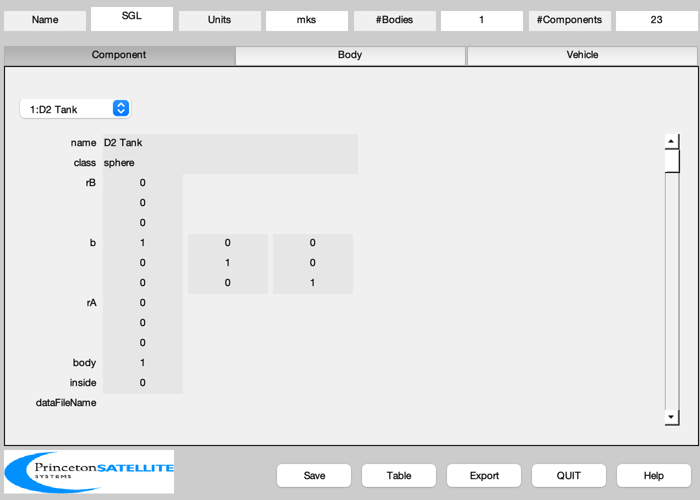

Design a spacecraft for the Solar Gravitational Lens mission
You can change parameters to resize the vehicle. The fuel masses must come from a mission sizing script.
See also BuildCADModel, CreateReport, ExportOBJ
Contents
%-------------------------------------------------------------------------- % Copyright (c) 2015 Princeton Satellite Systems, Inc. % All Rights Reserved. %-------------------------------------------------------------------------- % Since 2016.1 %-------------------------------------------------------------------------- % The launch vehicle shroud is 5080 mm by 6096 + 7665
Vehicle parameters
power = 1.7e6; % W nEngines = 1; % Number of engines at power level specPower = 1; % kW/kg massHe3 = 0.24; % kg massD = 3.600e+03; % kg fS = 0.02; % Structural fraction for tanks, kg/kg fuel tank/fuel fInsulation = 0.05; % Fraction for sizing cyrogenic tank insulation
Script controls
exportCAD = 1;
addLander = 0; % the lander is a subassembly
Mission sizing calculations
% Use the density of the fuels as liquids for tank sizing. % He3: 59 kg/m3 as a liquid or 0.1339 g/L at STP rhoHe3 = 0.1339; % kg/m^3 rhoD = 163.83; % kg/m^3 volD = massD/rhoD; volHe3 = massHe3/rhoHe3; rD = (3*volD/(4*pi))^(1/3); rHe3 = (3*volHe3/(4*pi))^(1/3); qSc.power = power; qSc.specPower = specPower; rDTank = (1+fInsulation)*rD; massDTank = (1+fS)*massD; rHe3Tank = (1+fInsulation)*rHe3; massHe3Tank = (1+fS)*massHe3; % Fusion engine %-------------- rEngine = 0.55; lEngine = (10-2)/(10-1)*power*1e-6 + 1.1; lNozzle = 0.8; eta = 0.58; % engine efficiency for sizing radiators
Spacecraft parameters
lengthCylTrans = 2; radiusCylTrans = 1.5; wPayload = 1; lTruss = [1 0.5 1]; massCylTrans = 200; % arbitrary shell mass xDTank = 0; xLander = xDTank + rDTank + lTruss(1) + wPayload + 0.1; xPayload = xDTank + rDTank + wPayload/2 + lTruss(1); xTruss = [xDTank + rDTank, -rDTank-lTruss(2), -rDTank - lTruss(2) - 2*rHe3Tank - lTruss(3)]; xHe3Tank = xTruss(2) - rHe3Tank; xTrans = xTruss(3) - lengthCylTrans; xAntenna = xPayload; xEngine = xTrans - lEngine; xShell = xTruss(3); rShell = 1.05*rDTank; lShell = xTruss(1) - xTruss(3); % Propellant tubes xD1 = [xDTank;0.5*rD;-0.5*rD]; xD2 = [xTrans;0.5*rD;-0.5*rD]; xHe1 = [xHe3Tank;0.3*rHe3;0.3*rHe3]; xHe2 = [xTrans;0.3*rHe3;0.3*rHe3]; rDT = 0.05; rHeT = 0.05; % Radiator radiatorArealMass = 2.75; tempRadiator = 625; tRadiator = 0.1; lengthTruss = 3; % Solar panels solarEff = 0.3; powerSolar = 2000; areaSolar = (powerSolar/1367)/solarEff; % 1367 is solar flux at Earth's orbit ySolar = 2; % m zSolar = 0.5*areaSolar/ySolar; % m xSolar = 0.01; zStrut = 1; massSolar = powerSolar/150; % https://www.orbitalatk.com/space-systems/space-components/solar-arrays/docs/FS007_15_OA_3862%20UltraFlex.pdf rStrutSolar = [-6;0;radiusCylTrans]; rPanelSolar = [-6-xSolar/2;0;radiusCylTrans+zStrut+zSolar/2]; rBackSolar = [-6+xSolar/2;0;radiusCylTrans+zStrut+zSolar/2];
Mass calculations
engine mass is obtained simply from specific power estimate
massEngine = qSc.power/(1000*qSc.specPower); clear s % Build the CAD model BuildCADModel( 'initialize' ); BuildCADModel( 'set name' , 'SGL' ); BuildCADModel( 'set units', 'mks' ); m = CreateBody( 'make', 'name', 'Core' ); BuildCADModel('add body', m ); BuildCADModel( 'compute paths' ); % D2 tank - includes the fuel mass m = CreateComponent( 'make', 'sphere', 'radius', rDTank, 'n', 20, 'faceColor', 'gold foil','inside',0, ... 'rA', [xDTank;0;0], 'mass', massDTank, 'name', 'D2 Tank', 'body', 1 ); BuildCADModel( 'add component', m ); b = [0 0 1;0 1 0;-1 0 0]; m = CreateComponent('make', 'cylinder', 'rUpper', radiusCylTrans, 'rLower', radiusCylTrans,... 'h', lengthCylTrans, 'n', 20, 'b', b, 'faceColor', 'aluminum',... 'inside',0, 'rA', [xTrans;0;0], 'mass', 0, 'name', 'Engine Enclosure', 'body', 1 ); BuildCADModel( 'add component', m ); % Add the solar panels [vPanel, fPanel] = Box( xSolar, ySolar, zSolar, '+x' ); [vBack, fBack] = Box( xSolar, ySolar, zSolar, '-x' ); [vStrut, fStrut] = SolarWingSupport( ySolar, zStrut, 2*xSolar ); bStrutSolar = [0 0 1;1 0 0;0 1 0]; % + Z m = CreateComponent( 'make', 'generic', 'vertex', vPanel, 'face', fPanel,'rA',rPanelSolar,... 'name', 'Solar Wing +Y Cells', 'body', 1, 'faceColor', [0 0 1],'inside', 0 ); BuildCADModel( 'add component', m ); m = CreateComponent( 'make', 'generic', 'vertex', vBack, 'face', fBack,'rA',rBackSolar,... 'name', 'Solar Wing +Y Back', 'body', 1, 'faceColor', 'black','inside', 0 ); BuildCADModel( 'add component', m ); m = CreateComponent( 'make', 'generic', 'vertex', vStrut, 'face', fStrut,'rA',rStrutSolar,'b',bStrutSolar,... 'name', 'Solar Wing +Y Strut', 'body', 1, 'faceColor', 'black','inside', 0 ); BuildCADModel( 'add component', m ); % - Z rPanelSolar(3) = -rPanelSolar(3); rBackSolar(3) = -rBackSolar(3); rStrutSolar(3) = - rStrutSolar(3); bStrutSolar = [0 0 1;1 0 0;0 -1 0]; m = CreateComponent( 'make', 'generic', 'vertex', vPanel, 'face', fPanel,'rA',rPanelSolar,... 'name', 'Solar Wing +Y Cells', 'body', 1, 'faceColor', [0 0 1],'inside', 0 ); BuildCADModel( 'add component', m ); m = CreateComponent( 'make', 'generic', 'vertex', vBack, 'face', fBack,'rA',rBackSolar,... 'name', 'Solar Wing +Y Back', 'body', 1, 'faceColor', 'black','inside', 0 ); BuildCADModel( 'add component', m ); m = CreateComponent( 'make', 'generic', 'vertex', vStrut, 'face', fStrut,'rA',rStrutSolar,'b',bStrutSolar,... 'name', 'Solar Wing +Y Strut', 'body', 1, 'faceColor', 'black','inside', 0 ); BuildCADModel( 'add component', m ); % Add He3 Tank m = CreateComponent( 'make', 'sphere', 'radius', rHe3Tank, 'n', 20, ... 'faceColor', 'gold foil','inside',0, 'rA', [xHe3Tank;0;0], 'mass', massHe3Tank, 'name', 'He3 Tank', 'body', 1 ); BuildCADModel( 'add component', m ); % Add shell m = CreateComponent('make', 'cylinder', 'rUpper', rShell, 'rLower', rShell,... 'h', lShell, 'n', 20, 'b', b, 'faceColor', 'mirror',... 'inside',0, 'rA', [xShell;0;0], 'mass', massCylTrans,... 'name', 'Shell', 'body', 1 ); BuildCADModel( 'add component', m ); % Add lines [v, f] = TubeBetweenPoints(xD1,xD2,rDT); m = CreateComponent( 'make', 'generic', 'vertex', v, 'face', f,'rA',[0;0;0],... 'name', 'D2 Line', 'body', 1, 'faceColor', 'gold foil','inside', 1 ); BuildCADModel( 'add component', m ); [v, f] = TubeBetweenPoints(xHe1,xHe2,rHeT); m = CreateComponent( 'make', 'generic', 'vertex', v, 'face', f,'rA',[0;0;0],... 'name', 'He3 Line', 'body', 1, 'faceColor', 'gold foil','inside', 1 ); BuildCADModel( 'add component', m ); % Add Engines %------------ massNozzle = 0.05*massEngine; massEngine = 0.95*massEngine; xNozzle = xEngine - lNozzle; rA = [xEngine;0;0]; name = sprintf('Engine %d',1); m = CreateComponent( 'make', 'cylinder', 'rUpper', rEngine, 'rLower', rEngine,... 'h', lEngine, 'n', 20, 'b', b, ... 'faceColor', 'gold foil','inside',0, 'rA', rA,... 'mass', massEngine, 'name', name, 'body', 1 ); BuildCADModel( 'add component', m ); rA = [xNozzle;0;0]; name = sprintf('Magnetic Nozzle %d',1); m = CreateComponent( 'make', 'cylinder', 'rUpper', 0.5*rEngine, 'rLower', rEngine, 'h', lNozzle, 'n', 20, 'b', b, ... 'faceColor', 'black','inside',0, 'rA', rA, 'mass', massNozzle, 'name', name, 'body', 1 ); BuildCADModel( 'add component', m ); % Add Radiators %-------------- heatRadiatedPerSide = (1-eta)*nEngines*qSc.power/4; % for one radiator side sigma = 5.67e-8; area = heatRadiatedPerSide/(sigma*tempRadiator^4); xWidth = lengthCylTrans; yWidth = area/xWidth; massRadiator = radiatorArealMass*area; q = 1; for k = 1:2 name = sprintf('Radiator %d',k); rA = [xTrans + 0.5*lengthCylTrans;q*(radiusCylTrans+lengthTruss);0]; m = CreateComponent( 'make', 'box', 'x', xWidth, 'y', yWidth, 'z', tRadiator, ... 'faceColor', 'radiator','inside',0, 'rA', rA, 'mass', massRadiator, 'name', name, 'body', 1 ); BuildCADModel( 'add component', m ); q = -q; end % Optical communications system mGimbal = 7.5; massAntenna = 2; massTruss = 10; rhoTruss = 409.7/4.55^2; bA = [0 0 1;0 1 0;-1 0 0]; [v, f, l] = Truss( [0;0;0], [4;0;0], 0.25, 6, 0.025 ); lBase = 2.5 + radiusCylTrans; % DOCS 1 m = CreateComponent( 'make', 'generic', 'vertex', v, 'face', f, 'edgeColor','aluminum', 'rA', [xAntenna;0;lBase],... 'name', 'Optical Truss 1', 'body', 1, 'b',bA, 'mass',massTruss,... 'faceColor', 'gold foil', 'inside', 0); BuildCADModel( 'add component', m ); m = CreateComponent( 'make', 'cylinder', 'rUpper', 0.1, 'rLower',0.1, 'h', 0.2, 'n',12, 'rA', [xAntenna;0;lBase],... 'name', 'Optical Azimuth Gimbal 1', 'body', 1, 'mass', mGimbal/2, ... 'faceColor', 'gold foil', 'inside', 0); BuildCADModel( 'add component', m ); m = CreateComponent( 'make', 'cylinder', 'rUpper', 0.15, 'rLower',0.15, 'h', 0.8, 'edgeColor','black','b',b,... 'name', 'DOCS1', 'body', 1, 'faceColor', 'black','inside', 0,'mass',massAntenna,... 'rA',[xAntenna-0.4;0;lBase+0.4] ); BuildCADModel( 'add component', m ); % Add trusses %------------ for k = 1:length(xTruss) xBottom = [xTruss(k);0;0]; xTop = [xTruss(k)+lTruss(k);0;0]; nTruss = 2; [v, f] = Truss( xBottom, xTop, rHe3Tank, nTruss, 0.01*rHe3Tank ); c = cos(pi/4); v = ([1 0 0;0 c c;0 -c c]*v')'; s = sprintf('Central Truss %d',k); m = CreateComponent( 'make', 'generic', 'vertex', v, 'face', f,'edgeColor', 'truss' ,'rA',[0;0;0],... 'name', s, 'body', 1, 'faceColor', [0.8 0.1 0.2],'inside', 1 ); BuildCADModel( 'add component', m ); end % Add payload mPayload = 300; m = CreateComponent( 'make', 'box', 'x', wPayload, 'y', wPayload, 'z', wPayload,'faceColor', 'gold foil','inside',0, ... 'rA', [xPayload;0;0], 'mass', mPayload, 'name', 'Payload', 'body', 1 ); BuildCADModel( 'add component', m );
Create mass budget
Add subsystems
BuildCADModel( 'add subsystem', 'ACS', {'star camera','rwa' 'torquer'} ); BuildCADModel( 'add subsystem', 'Propulsion', {'engine' 'fuel' 'radiator' 'nozzle'} ); BuildCADModel( 'add subsystem', 'Fuel', {'tank','line'} ); BuildCADModel( 'add subsystem', 'Insulation', {'shell'} ); BuildCADModel( 'add subsystem', 'Telemetry and Command',{'optical', 'board','DOCS'} ); BuildCADModel( 'add subsystem', 'Structure', {'support', 'frame', 'strut', 'panel','central'} );
Update the mass properties to produce the tables
BuildCADModel( 'update body mass properties' ); g = BuildCADModel( 'get model'); BuildCADModel('show vehicle'); bySubsystem = true; noZero = true; CreateReport( g, 'tex', FileFullpath('SGLMassSummary'), 'mass', bySubsystem, noZero, true ); CreateReport( g, 'tex', FileFullpath('SGLMass'), 'mass', bySubsystem, noZero, false ); CreateReport( g, 'txt', [], 'mass', bySubsystem, noZero, false ); CreateReport( g, 'txt', [], 'mass', bySubsystem, noZero, true );
Component Mass Units
ACS subsystem
Propulsion subsystem
Engine 1 1615 kg
Radiator 1 56.74 kg
Radiator 2 56.74 kg
Magnetic Nozzle 1 85 kg
Propulsion Subsystem Total 1813 kg
Fuel subsystem
D2 Tank 3672 kg
He3 Tank 0.2448 kg
Fuel Subsystem Total 3672 kg
Insulation subsystem
Shell 200 kg
Insulation Subsystem Total 200 kg
Telemetry and Command subsystem
Optical Truss 1 10 kg
Optical Azimuth Gimbal 1 3.75 kg
DOCS1 2 kg
Telemetry and Command Subsystem Total 15.75 kg
Structure subsystem
Miscellaneous subsystem
Payload 300 kg
Miscellaneous Subsystem Total 300 kg
Total 6001 kg
Component Mass Units
Propulsion Subsystem Total 1813 kg
Fuel Subsystem Total 3672 kg
Insulation Subsystem Total 200 kg
Telemetry and Command Subsystem Total 15.75 kg
Miscellaneous Subsystem Total 300 kg
Total 6001 kg

Export
if( exportCAD ) ExportOBJ( g, FileFullpath('SGL') ); end % xParam = {'Radiator Area',2*area,... % '3He Mass',massHe3, % 'Total Payload', %-------------------------------------- % PSS internal file version information %-------------------------------------- % $Id: 0631d01f56862a84279874893cc9f52bec63b99f $